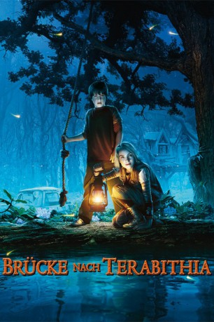

#3394 Brücke nach Terabithia
Alternativ: Bridge to Terabithia
 
 IMDB-Wertung: 7.2 / 10
IMDB-Wertung: 7.2 / 10  Metascore: 74
Metascore: 74 
Obwohl der 11-jährige Jesse Aaron täglich verbissen dafür trainiert, der schnellste Läufer seine Klasse zu werden, wird er von Klassenneuzugang Leslie Burke mühelos überholt. Trotz dieser Konkurrenzsituation lernen sich die beiden besser kennen. An einem Nachmittag, nach der Schule, rennen sie in den naheliegenden Wald, wo sie über ein "magisches" Seil in ihre Fantasiewelt Terabithia übersetzen und dort einiges an Abenteuern erleben. Doch, als Jess eines Tages von einem Ausflug mit seiner Lehrerin Mrs. Edmonds zurückkehrt, hat sich etwas Schreckliches ereignet...
Jahr: 2007
Dauer: 91 Minuten
FSK: 0
Land: USA Studio: Buena Vista PicturesTonspuren: DD5.1 - ,
Untertitel:
Auflösung: 1080p (1920x1040) Größe: 7690 MB
Genre: Drama, Abenteuer, Fantasy, Familie
Regisseur: Gabor Csupo
Drehbuch: Jeff Stockwell, David Paterson, Katherine Paterson
Soundtrack: Aaron Zigman
Darsteller:
 Josh Hutcherson als Jess Aarons
Josh Hutcherson als Jess Aarons AnnaSophia Robb als Leslie Burke
AnnaSophia Robb als Leslie Burke Zooey Deschanel als Ms. Edmunds
Zooey Deschanel als Ms. Edmunds Robert Patrick als Jack Aarons
Robert Patrick als Jack Aarons Bailee Madison als May Belle Aarons
Bailee Madison als May Belle Aarons Kate Butler als Mary Aarons
Kate Butler als Mary Aarons- Latham Gaines als Bill Burke
- Lauren Clinton als Janice Avery
 James Gaylyn als Principal Turner
James Gaylyn als Principal Turner- Maisy McLeod-Riera als First Grade Girl
 Phil Grieve als Mr. Bailey
Phil Grieve als Mr. Bailey- Dwight Wilson II als P.E. Teacher , uncredited
- Shelby Young als Ellie Aarons , uncredited
- Devon Wood als Brenda Aarons
- Emma Fenton als Ellie Aarons
- Grace Brannigan als Joyce Aarons
- Judy McIntosh als Judy Burke
- Patricia Aldersley als Grandma Burke
- Isabelle Rose Kircher als Carla
- Cameron Wakefield als Scott Hoager
- Elliot Lawless als Gary Fulcher
- Carly Owen als Madison
- Jen Wolfe als Mrs. Myers
- Ian Harcourt als Kenny - Bus Driver
- Brandon Cook als First Grade Boy
- Tyler Atfield als Eighth Grade Boy
- Hudson Mills als Willard Hughes
- Matt Gibbons als Dark Master
- Aaron Beard als Art Gallery Extra , uncredited
- Luke Burnyeat als School Kid , uncredited
- Zoe Cramond als Parishioner , uncredited
Datei: X:\2007(A-F)\Brücke nach Terabithia (2007, FSK0, 1920x1040).mkv seit 31.03.2016
Festplatte: HD 2007(A-Z)-2008(A-F)
 Es gibt insgesamt 65 Filme in der Gruppe '2007(A-F)'
Es gibt insgesamt 65 Filme in der Gruppe '2007(A-F)'